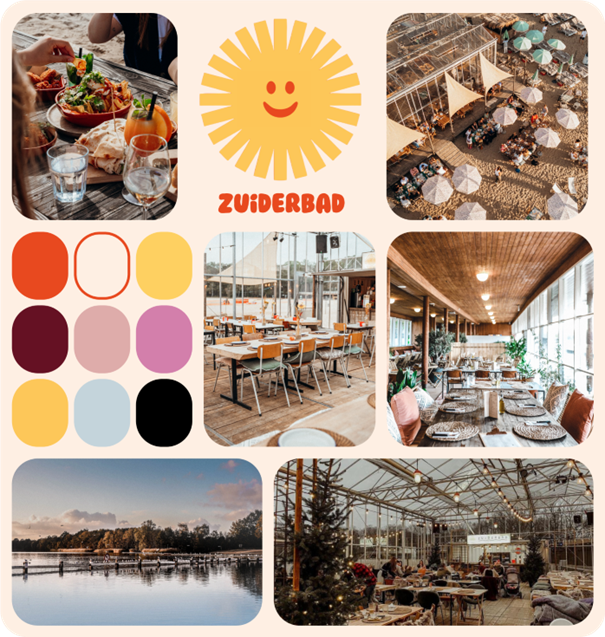
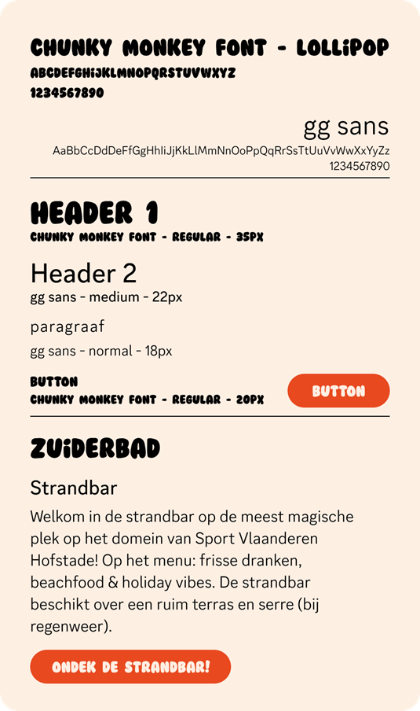
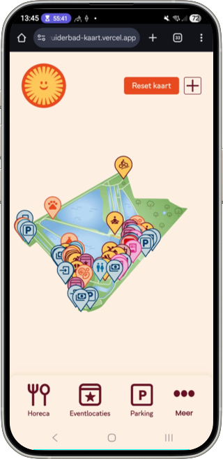

Context
Zuiderbad is a charming beach bar and restaurant located on the beach at Sport Vlaanderen Hofstade. The
Hofstade grounds span an impressive 15 hectares. With a location so big, it is quite easy to get lost. This
is a problem the visitors stumbled upon. There are about 5 physical maps scattered throughout the domain,
but there wasn’t any sort of map on the website yet. This led to confused visitors who were quick to call
for help on the number that was meant for emergencies. Thus creating difficulties for the staff and the
visitors. It was clear something had to change.
Process
At the time of this assignment, Zuiderbad’s website was undergoing a rebranding. This caused some
difficulties, but it was nothing we couldn’t handle.
We started by taking a look at Zuiderbad’s current website (at that time) and researching their style.
Then we created a moodboard. This board contains the logo, mainly used colours and other athmospheric
images to capture the right vibe.
Our client provided us with the correct typography that was going to be used in the new branding.


In order to have a unique solution that was different from our other classmates, our ‘competitors’ in this
case, my team came up with the idea of Sunny the mascot. Sunny’s design is based of the Zuiderbad logo and,
as you can see at the top of this page, we even got him 3D-printed!

Our idea was that Sunny will be guiding you throughout the interactive map, explaining how things work
and how to navigate on the website itself.
When you open the map, you are greeted by Sunny and given two options. You can follow Sunny’s tutorial
on how to navigate through the map, or you can choose to explore the map on your own.
You’ll be shown the map, the filters, how to get more info on a certain location etc.
This video shows Sunny guiding the visitor through the map.
To visualize our entire idea, we started designing in Figma.
The map itself went through multiple design-related changes before the final product came to be. As
mentioned before, Zuiderbad was undergoing a rebranding at the time. This meant that we didn’t have access
to the new logo, colours, font and general style guide until there was only one week left to complete this
assignment...
This caused my team and me some stress, because we had set up an entire website with the previous style just
to be told to now change everything in this short amount of time. Luckily, we made it through and even
improved bits of our previous design.
Below you’ll see some before and after images. Before being our first set of wireframes and with the
previous branding and after being with the new branding and some changes based on feedback.
This screen shows the general overview of the interactive map.
Changes:
- New colours and logo implemented
- Map takes up entire screen instead of just a portion
- First view of the map is fully zoomed out to see all the activities
- Icons of all activities are shown
This screen appears when you click on a certain location on the map.
Changes:
- New colours and logo implemented
- Map takes up entire upper screen instead of a smaller part
- Map is zoomed in more on the part that was clicked
- Navigation (bottom) has been kept to quickly filter for other activities
This screen gives extra information on the previously clicked location.
Changes:
- New colours and logo implemented
- Clearer ‘back’-button (top)
- Different pictures for more focus on dogs
- Navigation bar (bottom) has been left out because it is not necessary on this screen
After